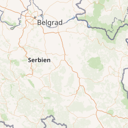
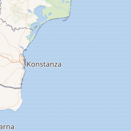
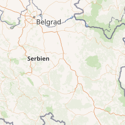
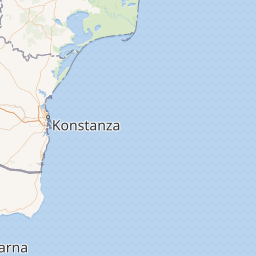

Bulgarien
| Bulgarien | |
.svg) | |
| Flagge | |
 | |
| Kurzdaten | |
| Hauptstadt | Sofia |
|---|---|
| Regierungsform | parlamentarische Republik |
| Währung Kurs (24.02.2023)[1] | Lew 1 EUR = 1,956 BGN 10 BGN = 5,112 EUR |
| Fläche | 110.994 km² |
| Einwohnerzahl | 7.000.039 (2019) |
| Amtssprache | Bulgarisch |
| Religion | Bulgarisch-orthodox 82,6%, muslimisch 12,2%, römisch-katholisch 1,7%, Juden |
| Strom/Stecker | 220 V, 50 Hz; Eurostecker/Schuko |
| Telefonvorwahl | +359 |
| Domain | .bg, .бг |
| Zeitzone | MEZ+1 |
Bulgarien (bulgarisch: България, Balgarija) liegt in Südosteuropa auf dem Balkan und ist seit dem 1. Januar 2007 Mitgliedsstaat der Europäischen Union. Das Land grenzt im Norden an Rumänien, im Westen an Serbien und Nordmazedonien und im Süden an Griechenland und die Türkei. Im Osten bildet das Schwarze Meer die Landesgrenze.
Regionen[Bearbeiten]
Bulgarien ist ein Land mit einer reichen Geschichte, Kultur und Natur. Jede Region des Landes hat ihre eigenen touristischen Besonderheiten. Hier sind einige Beispiele:
Schwarzmeerküste: Die Schwarzmeerküste ist eines der beliebtesten Reiseziele Bulgariens. Die Region ist bekannt für ihre schönen Strände, kristallklares Wasser und eine Fülle von Wassersportaktivitäten. Besucher können auch historische Städte wie Varna und Nessebar besuchen oder in einem der vielen Resorts entlang der Küste entspannen.
Sofia und Umgebung: Sofia, die Hauptstadt Bulgariens, ist eine Stadt mit einer reichen Geschichte und Kultur. Besucher können die vielen Sehenswürdigkeiten wie die Alexander-Newski-Kathedrale, die Serdica-Ruinen und den Vitosha-Berg besichtigen. In der Umgebung von Sofia können Besucher auch die Rila-Klosters besuchen, die zum UNESCO-Weltkulturerbe gehören.
Rila-Gebirge: Das Rila-Gebirge ist ein wunderschönes Gebirge mit einer Fülle von Outdoor-Aktivitäten wie Wandern, Bergsteigen und Skifahren. Das Gebirge beherbergt auch das Rila-Kloster, eines der bekanntesten Wahrzeichen Bulgariens.
Rhodopengebirge: Das Rhodopengebirge ist ein weiteres beliebtes Outdoor-Reiseziel in Bulgarien. Die Region bietet eine Fülle von Aktivitäten wie Wandern, Reiten und Mountainbiken. Besucher können auch traditionelle bulgarische Dörfer besuchen und die lokale Kultur erleben.
Donautal: Das Donautal im Norden Bulgariens ist bekannt für seine atemberaubenden Landschaften und die reiche Tierwelt. Besucher können hier Vögel beobachten, auf Bootsfahrten gehen oder historische Städte wie Russe und Silistra besuchen.
Thrakisches Tiefland: Das Thrakische Tiefland im Süden Bulgariens ist bekannt für seine Weinberge und den bulgarischen Wein. Besucher können Weingüter besuchen und den lokalen Wein probieren. Die Region ist auch reich an historischen Stätten wie der antiken Stadt Perperikon.
Städte[Bearbeiten]
 



- 1 Sofia (София) – Die Hauptstadt des Landes ist auf jeden Fall sehenswert. Zu den bekanntesten Bauwerken gehört die Aleksander-Nevski-Kathedrale.
- 2 Plovdiv (Пловдив) – ist die zweitgrößte Stadt Bulgariens und besitzt eine malerische Altstadt mit Überresten aus der Antike.
- 3 Varna (Варна) Diese Küstenstadt am Schwarzen Meer ist ein beliebtes Touristenziel. Varna bietet schöne Strände, ein lebendiges Nachtleben und eine Fülle von historischen und kulturellen Stätten wie römischen Thermen und die Kathedrale von Varna. Die nahe gelegenen Goldstrände und das Naturschutzgebiet des Kamchia-Flusses sind ebenfalls einen Besuch wert.
- 4 Burgas (Бургас) – besitzt den größten Hafen an der bulgarischen Schwarzmeerküste und ist die viertgrößte Stadt des Landes.
- 5 Russe (Русе) – besitzt an der Donau einen kleinen Hafen für Kreuzfahrtschiffe. Es gibt ein Historisches, ein Naturwissenschaftliches und ein Verkehrsmuseum sowie eine Kunstgalerie. Viele Gebäude sind aus der Zeit des Barocks und der Renaissance. Am Donauufer steht ein Hotel mit 22 Stockwerke, mit weiten Blick über das Land.
- 6 Bansko (Банско) - bekanntes Skiresort im Piringebirge mit gut ausgebauten Pisten. Im Sommer ist der Ort auch ein lohnenswertes Ziel, da man dann zu den Skihütten mit dem Auto fahren kann und fast alpine Landschaft und Natur genießen kann.
- 7 Kasanlak (Казанлък) - Zentrum des Rosen-Tals mit seinem Rosenfestival und bekannt für seine vielen thrakischen Grabanlagen.
- -
- 9 Sandanski (Свети Врач) - größerer Ort mit guten Einkaufsmöglichkeiten und auch Thermalbad mit SPA-Hotels.
- 10 Shumen (Шумен)
- 11 Silistra (Силистра)
- 12 Vidin (Видин)
- 13 Veliko Tarnovo (Велико Търново) - liegt terrassenförmig am Fluss Jantra. Es gibt eine herrliche Altstadt und ist eine der schönsten Städte Bulgariens.
Eine vollständige Auflistung der bereits erstellten Ortsartikel befindet sich im Artikel Orte in Bulgarien.
Weitere Ziele[Bearbeiten]
Weltkulturerbe[Bearbeiten]


- 1 Kirche von Bojana (Боянска църква) 8 Kilometer südlich des Stadtzentrums von Sofia am Fuße des Berges Vitoscha befindet sich die 1979 in die UNESCO-Liste aufgenommene Kirche. Ursprünglich als Festung konzipiert handelt es sich nach Erweiterungen heute um einen dreiteiligen Kirchenkomplex, der für ein Fresko aus dem Jahre 1259 bekannt ist. Dieses ist eines der wichtigsten Beispiele für mittelalterliche osteuropäische Malerei.
- 2 Felskirchen von Ivanovo (Ивановски скални църкви) Diese Gruppe von Kirchen, Kapellen und Klosteranlagen wurde 1979 in die Liste des Weltkulturerbes aufgenommen. Sie liegen 22 Kilometer im Südwesten von Ruse und 73 Kilometer (Luftlinie) von der alten bulgarischen Hauptstadt Veliko Tarnovo entfernt. Es handelt sich dabei um in natürliche Höhlen und deren in Kalkstein geschlagenen Erweiterungen aus dem 13. bis 17. Jahrhundert. Die Felsenkirche der Jungfrau Maria ist die Zentralkirche und weist die schönsten Fresken auf.
- 3 Kloster Rila (Рилски манастир) Das im gleichnamigen Rilagebirge liegende Kloster befindet sich 117 Kilometer südlich von Sofia auf einer Höhe von 1147 Metern über dem Meeresspiegel. Es wurde von Schülern des Einsiedlers Iwan Rilski im 10. Jahrhundert gegründet. Im Mittelalter erhielt das Kloster von vielen Zaren reiche Geschenke und wurde zu einem wichtigen sozialen und kulturellen Zentrum. Die heutige Form stammt aus dem 19. Jahrhundert, als das Kloster nach einem Brand neu aufgebaut wurde und ist ein typisches Beispiel der bulgarischen Renaissance. Das Rila-Kloster wurde 1983 in die Liste des Weltkulturerbes aufgenommen.
- 4 Aladscha-Kloster (Аладжа манастир) Das Kloster liegt in einem Wald und befindet sich dort in einer ca. 40 m hohen Felsklippe auf halber Höhe. In zwei übereinanderliegenden Ebenen wurden die Räumlichkeiten aus den weichen kreideähnlichen Gesteinsschichten herausgearbeitet.
- 1 Nessebar (Несебър) Die auf einer felsigen Halbinsel gelegene Altstadt von Nessebar wurde dem Weltkulturerbe 1983 hinzugefügt. Sie befindet sich 27 Kilometer (Luftlinie) nördlich von Burgas an der Schwarzmeerküste. Die Besiedlungsgeschichte begann vor über 3000 Jahren mit den Thrakern, im 6. Jahrhundert v. Chr. wurde Nessebar zur griechischen Kolonie. Durch ihre unmittelbare Nähe zu Slantschew brjag hat sich die Altstadt zu einem Besuchermagneten entwickelt. Sehenswert sind Überreste der thrakischen Befestigungsanlagen, ein Apollo-Tempel, die Basilika Stara Mitropolja, die mittelalterliche Festung und ein archäologisches Museum. Das heutige Stadtbild ist vor allem durch die für die bulgarische Wiedergeburtszeit typischen Holzhäuser geprägt, in das die elf von ehemals 40 erhaltenen Kirchen farbige Akzente setzen.
- 2 Felsenrelief des Reiters von Madara (Мадарски конник) Das kleine Dorf Madara liegt etwa 18 Kilometer von Schumen und 62 Kilometer von Varna (Luftlinie) entfernt. In der Nähe befindet sich das 100 Meter hohe Kliff, in das vermutlich im 9. Jahrhundert n. Chr. das Relief eines Reiters gehauen wurde, der gegen einen Löwen kämpft. Das Felsenrelief von Madara gehört seit 1979 zum Welterbe der UNESCO.
- 3 Thrakergrab von Kasanlak (Казанлъшка гробница) Zirka 30 Kilometer von Stara Sagora entfernt inmitten des Rosentals befindet sich die Stadt Kasanlak, in deren unmittelbarer Nähe die thrakische Grabstätte zu finden ist. Sie wird auf das 4. Jahrhundert v. Chr. datiert. Im Inneren des Grabes sind die besterhaltenen Wandmalereien aus der hellenischen Zeit in Bulgarien zu sehen. Das Thrakergrab von Kasanlak wurde 1979 in den Bestand des Weltkulturerbes aufgenommen.
- 4 Thrakergrab von Sveshtari (Свещарска гробница) Das Dorf Sveshtari liegt 42 Kilometer nordöstlich von Rasgrad. Das in der Nähe liegende erst 1982 entdeckte thrakische Grabmal gehört seit 1985 zum Weltkulturerbe der UNESCO. Es zeichnet sich durch einzigartige architektonische Dekorationen aus, den Karyatiden, bei denen es sich um polychrome, halb menschliche, halb pflanzliche Figuren handelt. Die Grabanlage wird dem 3. Jahrhundert v. Chr. zugeordnet.
Weltnaturerbe[Bearbeiten]


{kind=link}
{kind=link}
{kind=link}
{kind=link}
{kind=link}
{kind=link}
{kind=link}
{kind=link}
{kind=link}
{kind=link}
- 1 Biosphärenreservat Srebarna (Сребърна) Es handelt sich um ein 900 Hektar großes Biosphärenreservat an der Grenze zu Rumänien, etwa einen Kilometer südlich der Donau und 19 Kilometer von der Ortschaft Silistra entfernt. Es ist Brutstatt für 99 Vogelarten, so z. B. der Krauskopfpelikan, insgesamt kommen 233 verschiedene Arten vor, darunter auch zahlreiche Zugvögel. Das Schutzgebiet ist der Öffentlichkeit nicht zugänglich. Ein Naturkundemuseum bietet Informationen über Flora und Fauna des Biospärenreservats Srebarna.
- 2 Pirin Nationalpark (Пирин) Der Nationalpark Pirin erstreckt sich über eine Fläche von 40.000 Hektar in einer Höhe von 950 bis 2915 Meter und liegt im Südwesten Bulgariens, südlich von Bansko. Er gehört zum gleichnamigen Pirin-Gebirge und umfasst den zweithöchsten Berg Bulgariens, den 2915 Meter hohen Wichren. Die Landschaft ist durch Granitgestein, alten Scharzkiefernbestand und 176 Trichterseen geprägt. In den niederen Regionen gibt es über 70 heiße Quellen. Zu den Aktivitäten, die im Park möglich sind, gehören Skifahren, Bergsteigen und Wandern. Auch entwickeln sich Öko- und Weintourismus zu Alternativen. Der Park empfängt jährlich zwischen 300.000 und 500.000 Besucher.
Gebirge[Bearbeiten]
- 3 Balkangebirge (Стара планина) Das Balkangebirge ist ein vielfältiges und beeindruckendes Gebirge, das viele Möglichkeiten für Outdoor-Aktivitäten, kulturelle Erkundungen und Entspannung bietet. Es ist ein wichtiger Teil der bulgarischen Natur- und Kulturlandschaft und definitiv einen Besuch wert.
- 4 Piringebirge (Пирин) Hochgebirgsnationalpark von herausragender natürlicher Bedeutung, UNESCO-Welterbestätte.
- 5 Rilagebirge (Рила) ist das höchste Gebirge der Balkanhalbinsel. Hier befinden sich das berühmte Rila-Kloster.
- 7 Witoschagebirge (Витоша) bietet eine Vielzahl von Wander- und Bergsteigermöglichkeiten. Es gibt mehrere markierte Wege mit unterschiedlichen Schwierigkeitsgraden und wunderschönen Landschaften.
Hintergrund[Bearbeiten]
Bulgarien ist neben Ungarn das touristisch "erfahrenste" und erschlossenste aller ehemaligen Ostblockländer, da es bereits zu sozialistischen Zeiten ein beliebtes Reiseziel war. Insbesondere gilt dies für die Schwarzmeerküste, aber auch entlang der Donau bestehen gute touristische Infrastrukturen. Mit dem Systemwechsel hat Bulgarien zunehmend in deren Ausbau investiert und präsentiert sich heute - im guten, wie im schlechten - als ausgesprochenes Reiseland.
Anreise[Bearbeiten]
Einreisebestimmungen[Bearbeiten]
Für Bürger der Europäischen Union ist im EU-Mitgliedsland Bulgarien der Personalausweis als Reisedokument ausreichend. Da das Land jedoch nicht Teil des Schengen-Raums ist, erfolgen an allen Landesgrenzen in aller Regel beim Grenzübertritt Ausweis- und Zollkontrollen. Hält man sich länger als 90 Tage im Land auf, so ist eine Anmeldung bei der zuständigen Ausländerbehörde des Aufenthaltsortes erforderlich, um die Ausstellung einer "Bescheinigung für EU-Bürger" über das Aufenthaltsrecht zu beantragen.
Flugzeug[Bearbeiten]
Es gibt den Flughafen der Landeshauptstadt 1 Flughafen Sofia (IATA: SOF) und den Flughafen der zweitgrößten Stadt 2 Flughafen Plowdiw (IATA: PDV)
Neben den täglich angebotenen Linienflügen von den meisten europäischen Hauptstädten nach Sofia lohnt es sich, sich nach Charterflügen zum 3 Flughafen Varna (IATA: VAR) oder 4 Flughafen Burgas (IATA: BOJ) (beide am Schwarzen Meer) umzuschauen. Preise ab 100 Euro für Hin- und Rückflug sind mit etwas Glück durchaus zu finden. Die Flugzeit von Frankfurt am Main nach Sofia beträgt ungefähr 2½ Stunden.
Bahn[Bearbeiten]
Zugverbindungen bestehen nach Rumänien, Serbien, Montenegro, Nordmazedonien, Griechenland und der Türkei. Bulgarien ist Teil der Interrail-Zone H. Der Nachtzug Sofia-Istanbul ist der einzige grenzüberschreitende Zug aus der Türkei.
Balkan Flexipass[Bearbeiten]
Eine günstige Möglichkeit, durch den Balkan zu reisen, könnte der Balkan Flexipass sein. Man kann auf den nationalen Eisenbahnnetzen von Bulgarien, Bosnien und Herzegowina, Griechenland, Montenegro, Nordmazedonien, Rumänien (nur von REGIOTRANS betriebene Züge), Serbien, der serbischen Teilrepublik Bosnien und Herzegowina und der Türkei reisen. Es ist möglich mehrere Zugfahrten pro Reisetag zu unternehmen. Er gilt für 3, 5, 7, 10 oder 15 frei wählbare Tage innerhalb eines Monates. Der Pass wird als PapierdokumentAusgestellt, für die 1. oder 2. Klasse. Er ist ermäßigt für Jugendliche (unter 28) und Senioren (60+). 3 Tage 2. Klasse ohne Ermäßigung 84 €, 15 Tage 2. Klasse ohne Ermäßigung 252 € (05/2020)
Bus[Bearbeiten]
Es gibt zahlreiche internationale Busverbindungen nach Westeuropa und in die Türkei.
Wenn man mit dem Bus aus dem Ausland anreist, sind die Haltepunkte:
- Burgas
- Plovdiv
- Sofia
- Stara Zagora
- Varna
- Haskovo (für Busse aus der Türkei). Über Slivengrad gibt es keinen Nahverkehr an die Grenze bei Kapitan Antonoov.
Die Fahrt von Deutschland aus dauert etwa 24 Stunden bis 2 Tage und kostet, je nach Jahreszeit, ca. 50-80€ (beim Anbieter Flixbus).
Auto/Motorrad/Fahrrad[Bearbeiten]
Bei der Einreise muss eine Vignette für das Fahrzeug gekauft werden. Die Vignette ist für eine Woche (€ 8,-), einen Monat (€ 15,-) oder ein Jahr (€ 50,-) erhältlich. Die erwähnten Preise gelten für 2017 und PKWs mit höchstens 8 Sitzplätzen. Sie kann online (Seite nur auf bulgarisch) oder an den Grenzübergängen, an Tankstellen und in Postämtern gekauft werden. Die Vignette muss in der rechten unteren Ecke der Frontscheibe angebracht werden, der zweite Teil dient als Quittung und muss mitgeführt werden.
Verkehrsbestimmungen:
- Die Promillegrenze: 0,5
- Unfälle immer der Polizei melden
| PKW + Womo bis 3,5 t | über 3,5 t | Motorrad | |
|---|---|---|---|
| innerorts | 50 kmh | 50 kmh | 50 kmh |
| außerorts | 90 kmh | 70 kmh | 80 kmh |
| Autobahn | 140 kmh | 100 kmh | 100 kmh |
Mit dem Rad entlang der Nordgrenze fährt man auf dem man Donau-Radweg (Belgrad - Schwarzes Meer).
Schiff[Bearbeiten]
Über 470 km hinweg bildet die Donau die Grenze zwischen Bulgarien und Rumänien. Kreuzfahrtschiffe befahren diese Strecke ebenso wie Fähren und Frachtschiffe. Von Linienverkehr entlang der Donau ist jedoch nichts bekannt. Es gibt einzelne Donaufähren zwischen Rumänien und Bulgarien (u.A. Bechet-Orjachowo; Turnu Măgurele-Nikopol; Cǎlǎrași-Silistra), jedoch nicht an allen Stellen, mit denen man bei Betrachten einer Karte rechnen würde.
Fähr- und Schiffverbindungen übers Schwarze Meer gibt es ebenfalls nach Varna und Burgas; u.A: Burgas-Poti, Varna-Odessa.
Mobilität[Bearbeiten]
Die Straßenverhältnisse sind außerorts recht gut, innerorts können die Straßen für Mitteleuropäer ungewohnte Schlaglöcher aufweisen. Achtung bei Bahngleisen! Die Geschwindigkeit sollte 10 km/ h nicht überschreiten!
Taxi[Bearbeiten]
Immer vor der Fahrt den Preis vereinbaren! Meistens wird 1 Lewa pro km verrechnet. In Städten und touristischen Zentren 3-4 Lewa pro km.
Achtung! Bei Taxifahrten vom Flughafen: Dort wird (zumindest in Varna) von den dort bereits wartenden Taxifahrern immer der doppelte und dreifache Fahrpreis verlangt. Deshalb Tipp: Wenn man mit Handy unterwegs ist, ein örtliches Taxiunternehmen anrufen und sich ein Taxi zum Flughafen bestellen! (Telefonnummern eventuell im Flughafengebäude erfragen).
Taxis stehen in größeren Städten an allen touristischen Orten, können jedoch auch einfach vom Straßenrand herangeholt werden. Achtung: Die Fahrpreise können stark variieren, deshalb unbedingt den Preiszettel an der Windschutzscheibe oder an den hinteren Türen beachten! Bei Zielen außerhalb der Stadt sollte man mit dem Fahrer den Preis verhandeln (vorher vielleicht im Hotel erkundigen, wie hoch der Preis in etwa ist).
Apps wie Uber und Bolt funktionieren in Bulgarien nicht. Es gibt jedoch einen lokalen Startup mit einer Taxi-App mit dem Namen TaxiMe.
Mit der Bahn[Bearbeiten]
In allen größeren und auch kleineren Städten gibt es Bahnhöfe. Auf der Website des staatlichen Bahnunternehmens BDZ ist eine Fahrplanauskunft verfügbar. Die Züge, die die größeren Städte miteinander verbinden, sind zumeist auch recht sauber (von den Toiletten mal abgesehen). In den "Bummelzügen" geht es "familiärer" zu (dort sind die Toiletten dann leider aber die reinste Katastrophe). Eine Fahrt von Sofia nach Varna dauert etwa 9 Stunden und kostet ca. 30 Leva (15 Euro).
Mit dem Bus[Bearbeiten]
Busse sind in Bulgarien die bei weitem beliebtesten Transportmittel bei den Bulgaren, was auch dadurch zu erklären ist, dass sich nicht jeder bulgarische Haushalt ein Auto leisten kann. Die Preise sind äußerst interessant, die Verbindungen zahlreich und reichen bis in die entferntesten Winkel. Allerdings sollte man vor allem auf den kleineren Linien Geduld mitbringen, da zahlreiche Haltestellen, ein durchschnittlich schlechter Straßenzustand sowie das fortgeschrittene Alter vieler Busse die Fahrzeit keine allzu hohen Reisegeschwindigkeiten zulassen. Alle größeren Städte sind direkt miteinander verbunden und einfach per Bus zu erreichen.
Sprache[Bearbeiten]
Landessprache ist Bulgarisch und wird im kyrillischen Alphabet geschrieben. Türkisch ist die Sprache der muslimischen Bevölkerung, die etwa 9% der Gesamtbevölkerung ausmachen. Einige Bulgaren, besonders in den Tourismuszentren, sprechen jedoch auch Englisch und/oder Deutsch.
Gestik: Kopf schütteln heißt JA; Kopf nicken heißt NEIN
Aktivitäten[Bearbeiten]
Die Strände der Touristenressorts sind an Konzessionäre vergeben, die für Liegen und Sonnenschirme tageweise Miete verlangen. Diese sind von Ort zu Ort unterschiedlich und am höchsten in Goldstrand.
Einkaufen[Bearbeiten]
Bulgarien ist ein für mitteleuropäische Reisende ausgesprochen günstiges Reiseland. Im Vergleich mit Ländern, die strikte Ladenschlussgesetze haben, ist Bulgarien ein Paradies, da die meisten Geschäfte und Einkaufszentren um 09:30 oder 10:00 Uhr öffnen und durchgehend bis mindestens 20:00 geöffnet sind, in Touristenzentren oft noch länger. Auch Sonntags kann man teilweise ganz normal zum Supermarkt fahren und einkaufen gehen.
Geldwechsel[Bearbeiten]
Bei der Wahl des Wechselbüros ist darauf zu achten, dass der Wechselkurs im Bereich von 1,90 Lewa bis 1,95 Lewa für einen Euro liegt (1:1-Bindung des Lews an die D-Mark, jetzt Bindung mit 1,95583 Lewa für einen Euro). 1 Lew teilt sich in 100 Stotinki auf.
Nachdem der Beitritt zur Eurozone zum Anfang 2024 verschoben werden musste, soll die Umstellung auf den Euro nun 2025 erfolgen.[2]
Insbesondere in Sofia bieten einige Wechselbüros Kurse im Bereich von nur 1,60 Lewa an. In einigen Fällen werden Touristen auch arglistig getäuscht: Auf einem außen angebrachten, schnell änderbaren Kreideschild ist zum Kundenfang ein guter Kurs angeschlagen, wohingegen auf einem kleinen Schild im Inneren der Wechselstube plötzlich ein sehr viel schlechterer Wechselkurs steht. Daher sollte man sich zuerst die Adresse der Wechselstube einprägen und zur eventuellen Beweissicherung das außen angebrachte Schild mit dem Mobiltelefon fotografieren, einen Freund mit in die Wechselstube nehmen und einen anderen draußen warten lassen (als Zeugen) und sich ausrechnen, wie viele Lewa man erhalten sollte, bevor man sein Geld aushändigt. Stellt man dann während der Transaktion fest, dass man betrogen werden soll, darf man sich auf Ausreden wie „es wurde bereits im Computer verbucht, wir können die Transaktion nicht mehr rückgängig machen“ und andere Versuche, Druck auf einen auszuüben, gar nicht erst einlassen – stattdessen sollte man gleich das Mobiltelefon zücken und mit gut vernehmbarer Stimme damit drohen, die Polizei zu rufen (Telefon 112, internationaler Standard). Manchmal wird beim Wechseln auf der Straße Touristen auch noch altes, ungültiges Geld angedreht. Das erkennt man z. B. am fehlenden glitzernden Sicherheitsstreifen. Wie die seit 2005 im Umlauf befindlichen Scheine aussehen, zeigt ein Flyer der Nationalbank.
Wer auf Nummer Sicher gehen möchte, wechselt sein Geld daher lieber bei einer Bank; allerdings sind deren Kurse fast immer schlechter als der Kurs einer (seriösen!) Wechselstube. Das Wechseln ist nicht bei allen Banken möglich, auch die Kurse unterscheiden sich z. T. erheblich.
Aufgrund der meist besseren Kurse empfiehlt sich das Abheben von Geld mit der EC-Karte. Wegen der anfallenden Gebühr (meist höher als die Kommission einer Bank oder Wechselstube) sollte man einen höheren Betrag auf einmal abheben. Dabei ist zu beachten, dass man mit einer EC- oder Kreditkarte maximal 400 Lewa am Tag abheben kann (Stand: Sep 2017).
Das Wechseln von Währungen außer Dollars, Euro, Pfund oder gelegentlich Yen (z. B. Rumänischer Lei) kann schwierig bis unmöglich sein; selbst Geschäftsbanken lehnen den Tausch meist ab.
Grundsätzlich sollte man sich natürlich darüber im Klaren sein, dass Touristen, welche gerade eine Bank, Wechselstube oder Geldautomaten verlassen, für Taschendiebe, Trickbetrüger etc. ein besonders lohnendes Ziel darstellen.
Küche[Bearbeiten]
Die bulgarische Küche ist orientalischen und europäischen Einflüssen ausgesetzt, besonders durch die türkische, griechische, österreichische und französische Küchen. Es gibt viele äußerst fettreiche Gerichte, die aber mit verschiedenen Kräutern (Thymian, Oregano, Dill, Bohnenkraut, Petersilie und Waldkräutern) sowie vitaminreichen Salaten aus Tomaten, Kraut, Gurken, Paprika, Zwiebeln, Möhren und Knoblauch kombiniert werden, um sie verdaulicher zu machen. Bevorzugte Zubereitungsarten sind Schmoren, Braten, Backen, Kochen und auch die Anwendung von tönernen Gefäßen.
Vorspeisen[Bearbeiten]
{kind=link}
{kind=link}
- Schopska Salat (шопска салата): Tomaten, Gurken, (Paprika), grüner Zwiebellauch, Petersilie in einem Dressing aus Sonnenblumen-/Olivenöl und Essig und darüber kommt eine ordentliche Schicht feingeriebener Schafskäse.
- Kaschkaval pane (Кашкавал пане): panierter und gebratener Gelb-Hartkäse (dem Gouda sehr ähnlich) mit würzigem Geschmack
- Tarator (таратор): bekannte und im Sommer äußert beliebte Gurkenkaltschale/-suppe bestehend aus geriebenen Gurken, Knoblauch, Joghurt, Dill, Olivenöl, Zitronensaft und Walnüssen - kann man auch auf Eiswürfeln servieren oder mit Crushed Ice mischen!
Hauptgerichte[Bearbeiten]
{kind=link}
- Kebaptscheta, Kebapchew (кебапчета): Hackfleischröllchen aus gewürztem Hackfleisch (Rind, Schwein oder aus beidem) besteht. Das Fleisch muss gegrillt, nicht gebraten werden. Es ist bei vielen bulgarischen Festen und Feiern sehr beliebt. Heute wird Kebapche mit Pommes frites, gebackenen Kartoffeln, sirenischem Käse oder Lyutenitsa-Relish als Beilage serviert. Es muss einzeln geordert werden.
- Kjufteta (кюфтета) sind Fleischklößchen, die aus Schweine-, Kalb- oder Rindfleisch (oder einer Kombination ) hergestellt werden. Das Fleisch wird gewolft und dann mit Zwiebeln, Petersilie, Salz, Pfeffer und Kümmel vermischt. Oft wird Bohnenkraut als Gewürz hinzugefügt. Die Frikadellen werden auf dem Grill von beiden Seiten gebräunt und sofort serviert. Kufte werden oft mit Brot und gebackenem Reis serviert und müssen ebenfalls einzeln geordert werden.
- Kawarma (каварма) oder Gjuvetsch (гювеч)wird in traditionellen Tontöpfen (gyuveche) mit frischem Gemüse und Schweine-, Hühner- oder Rindfleisch zubereitet. Obwohl die Zutaten variieren können, enthält das Gericht normalerweise Karotten, Zwiebeln, Lauch, Pilze, Paprika, Tomaten und Wein. Kavarma wird als Hauptgericht serviert und ist das ganze Jahr über erhältlich.
- Schaschlik (шашлик): gegrillte Fleischspieße abwechselnd bestückt mit Gemüse (Paprika, Zucchini oder Pilze) sowie Speck/Schinken
- Parshola (пържола): Kotelett
- Mussaka (мусака): Hackfleisch und Kartoffeln, überbacken mit Milch und Eiern
- Dschobtsche (джобче) (Die bulgarische Variante des Döners): Mehr so eine Art Imbiss (wird am Straßenrand oder in kleinen Läden verkauft). Eine spezielle Art Fladenbrot (Brottaschen) gefüllt mit z. B. Salat, Frikadellen, Würstchen, Hühnerfleisch, Gemüse aller Art. Darüber wird eine Sauce gegeben. Man kann sich alles nach seinen Wünschen zusammenstellen lassen.
Backwaren[Bearbeiten]
- Die einfachen und klassischen Version von Banitza (баница) sind gebutterte Blätterteigplatten mit einer Mischung aus Eiern, Joghurt und Weißkäse wie Sirene und Feta. Neben der klassischen Käsefüllung kann diese Pastete mit einer Vielzahl verschiedener Füllungen zubereitet werden, entweder herzhaft oder süß. Beliebt sind Varianten mit Gemüsefüllung: Zelnik kann mit Blattgemüse wie Spinat, Brennnesseln, Ringelblumen, Petersilie und Kohl gefüllt sein, Praznik wird mit Lauch zubereitet, und Luchnik ist eine Art Banitsa mit Zwiebelfüllung. Bei den süßen Varianten der Banitsa gibt es Tikvenik mit Kürbissen, eine mit Äpfeln gefüllte Variante, Schtrudel oder Mlecna Banitsa, bei der Blätterteig mit einer Mischung aus Milch, Eiern, Zucker und Vanille getränkt wird. Die Bulgaren legen in der Weihnachtazeit manchmal Glücksbringer, Münzen oder Zettel, auf denen Wünsche geschrieben stehen, in die Banitsa. Der Teigtaschen werden als Frühstücksgericht mit Joghurt oder später mit Boza ( süßlich-prickelndes Bier) serviert.
- Pitka:(питка) Rundbrot
- Milinki: (милинки) kleine salzige Brötchen
- Kifla: (кифла) mit Pflaumenmus gefüllte Hörnchen
Desserts[Bearbeiten]
- Sladoled: (сладолед) Speiseeis
- Sladkisch: (сладкиш) Kuchen
- Sehr lecker (und gesund) ist der bulgarische Joghurt Kiselo mljako (кисело мляко), den man sich nach Art des Hauses (domaschna) mit frischen oder eingeweckten Beeren bzw. mit Honig und gehackten Walnüssen servieren lassen sollte.
- Torta Garash (Торта Гараш) ist eines der beliebtesten Desserts. Der Kuchen besteht aus fünf zarten Walnussbiskuits, die mit dunkler Schokolade überzogen sind. Der gesamte Kuchen wird dann mit einer glitzernden Schokoladenglasur oder cremigen Ganache überzogen und mit Walnüssen, Kokosraspeln, Mandelscheiben oder Schokoladenverzierungen dekoriert.
Weiteres[Bearbeiten]
- Samardala-Salz ist eine traditionelle Gewürzmischung, die ihren Ursprung in Stara Sagora hat. Sie besteht aus nur zwei Zutaten - Salz und Samardala (Nectaroscordum siculum bulgaricum oder Allium siculum), auch bulgarischer Honigknoblauch genannt, ein Gewürz, das zur Familie der Alliumgewächse gehört und auf dem Balkan heimisch ist. Diese Gewürzmischung wird häufig auf Sandwiches mit Butter oder Hackfleisch, auf Pizza, Brot, Kartoffeln oder hartgekochten Eiern verwendet und verleiht einen spezifischen, leicht bitteren und salzigne Geschmack.
- Die Gornooryahovski sudzhuk ist eine traditionelle Wurst, die in Gorna Oryahovitsaaus aus Rindfleisch hergestellt wird. Der würzige Geschmack entsteht durch eine Mischung aus schwarzem Pfeffer, Kümmel und Bohnenkraut.
- Lukanka Panagyurska (Луканка Панагюрска) ist eine gepresste, luftgetrocknete Rohwurst. Sie wird aus einer Mischung aus Rindfleisch und Schweinefleisch, Salz, schwarzen oder weißen Pfeffer und Kümmel hergestellt. Den Namen hat die Wurst von der Stadt Panagjurischte, wo sie zum ersten Mal hergestellt wurde. Die Rohwurst ist seit 2014 als garantiert traditionelle Spezialität (g.t.S.) EU-weit geschützt.
- Banski starets ist eine traditionelle, trocken gepökelte Schweinesalami, die ihren Ursprung in Bansko hat. Sie wird aus einer Mischung aus gewürztem Schweinehackfleisch hergestellt, das in Schweinedärme gefüllt, gepresst und dann vor dem Verzehr mindestens 6 Monate lang luftgetrocknet wird. Typische Gewürze sind Kreuzkümmel, schwarzer Pfeffer und Salz. Banski starets ist ein traditionelles Meze-Gericht, das als Vorspeise serviert wird.
Getränke[Bearbeiten]
- Wein: Bulgarien gehört zu den Ländern mit der längsten Weinbautradition Europas! Die Thraker brachten vor 5.000 Jahren die ersten Reben aus dem Nahen Osten auf den Balkan. In Bulgarien gibt es fünf Weinbaugebiete: Die Donauebene, Heimat der einheimischen Gamza-Traube, die Schwarzmeerregion mit den besten Weißweinen wie Chardonnay, Sauvignon Blanc, Dimjat oder Riesling, das Rosental mit der Rebsorte Kadarka, das Thrakiatal, Anbaugebiet des einheimischen Mavrud sowie Cabernet Sauvignon und Merlot. Im Strumatal und am Südabhang des Pirin-Gebirges gedeiht der sehr schwere und süffige Melnikwein.
- Alkoholfreie Getränke:
- Boza (türkisch: boza, bulgarisch: боза, IPA: [boˈza], rumänisch: bragă) ist ein süßlich-prickelndes (auch leicht alkoholisches) Getränk
- Bier: Zu den besten bulgarischen Pilssorten gehören Zagorka und Kamenitza, Pils ist auch mit Abstand die meistgetrunkene Bierart des Landes. Daneben gibt es seit kurzem auch das weißbierartige Kamenitza Bjala und das sehr dunkle Stolitschno, die den bulgarischen Bierhorizont erweitern. Ansonsten sind internationale Biersorten wie Becks, Heineken, Stella Artois oder Corona in einigen Cafés und den meisten Bars und Nachtclubs zu finden.
- Spirituosen:
- Rakija (Obstler) ist das Nationalgetränk schlechthin und wird meist aus Trauben hergestellt, doch gibt es z. B. auch Pflaumen-Rakija. Der Alkoholgehalt von handelsüblichem Rakija liegt bei etwa 40-45%, bei selbstgebranntem kann er jedoch auch mal die 50% überschreiten. Rakija wird nicht als "Verdauungsschnäppschen" sondern zu Beginn der Mahlzeit beim Schopska-Salat getrunken.
- Mastika (Anisschnaps ähnlich dem Ouzo mit großer Popularität)
- Menta (Pfefferminzlikör) wird gerne mit Milch getrunken.
- Preslav, Pliska und Pomorie sind bulgarische Cognacmarken.
- Wodka: Zu den bekannten einheimischen Wodkamarken gehören u. a. Flirt. Diese sind erheblich billiger als die importierten Marken und geschmacklich auch nicht zu verachten, vor allem, wenn es darum geht, den Wodka mit Saft oder Cola zu mischen.
Nachtleben[Bearbeiten]
Ein reges Nachtleben ist während der Saison am Sonnenstrand (bei Burgas) und am Goldstrand (bei Varna) zu finden. Alle Großstädte Bulgariens besitzen zahlreiche Bars, Clubs und Diskotheken, die das ganze Jahr offen sind, während vielerorts in den Touristenzentren nur im Sommer gearbeitet wird.
Unterkunft[Bearbeiten]
Das Angebot an Unterkunftsmöglichkeiten nimmt von Jahr zu Jahr zu. Die größere Vielfalt geht auf private Initiative zurück. Empfehlenswert sind vor allem familiäre Pensionen oder ausgeschriebene Zimmer, die man in immer mehr Orten findet. Die Preise sind für mitteleuropäische Reisende günstig. Allerdings wird teilweise noch das "double-pricing" praktiziert, das heißt, Touristen zahlen dann einen deutlich höheren Preis als üblich.
Lernen und Studieren[Bearbeiten]
Feiertage[Bearbeiten]
| Termin | Name | Bedeutung |
|---|---|---|
| Mo, 1. Jan. 2024 | Neujahr | Neujahrstag |
| So, 3. Mär. 2024 | Tag der Befreiung Bulgariens von der osmanischen Fremdherrschaft | Nationalfeiertag |
| Fr, 3. Mai 2024 | Karfreitag | (orthodox) |
| So, 5. Mai 2024 | Ostersonntag | Ostern (orthodox) |
| Mo, 6. Mai 2024 | Ostermontag | Ostern (orthodox) |
| Mi, 1. Mai 2024 | Tag der Arbeit | Internationaler Tag der Arbeit |
| Mo, 6. Mai 2024 | Tag der Tapferkeit und der bulgarischen Armee | Georgstag (Schutzpatron der Soldaten) |
| Fr, 24. Mai 2024 | Festtag der bulgarischen Aufklärung und Kultur sowie des slawischen Schrifttums | Hl. Kyrill und Method |
| Mi, 6. Sep. 2023 | Tag der Wiedervereinigung Bulgariens | Nationalfeiertag |
| Fr, 22. Sep. 2023 | Tag der Unabhängigkeit Bulgariens | Nationalfeiertag |
| Mi, 1. Nov. 2023 | Tag der Volksaufklärer | Schüler, Studenten und Lehrer |
| So, 24. Dez. 2023 | Heiliger Abend | Weihnachten, Gedenken an Christi Geburt |
| Mo, 25. Dez. 2023 | Weihnachten | Weihnachten, Gedenken an Christi Geburt |
| Di, 26. Dez. 2023 | 2. Weihnachtstag | Weihnachten, Gedenken an Christi Geburt |
| So, 31. Dez. 2023 | Silvester |
Sicherheit[Bearbeiten]
Der Autor dieses Textes reist seit mehreren Jahren regelmäßig in den Osten Bulgariens (Razgrad, Sliven, Warna, Albena). In der Regel kann man sich ganz normal und frei bewegen und braucht auch nicht ständig Angst davor zu haben, beklaut zu werden. Bei extremen Touristenansammlungen oder am Strand sollte man jedoch etwas mehr auf seine Wertsachen aufpassen.
Ein allgemeines Risiko, wie in jeder anderen europäischen Großstadt auch, bleibt immer.
Gesundheit[Bearbeiten]
Die Europäische Krankenversicherungskarte gilt. Es gibt bei Kassenärzten eine geringe Praxisgebühr pro Besuch sowie einen ebenfalls moderaten Tageszuzahlungssatz im Krankenhaus (Merkblatt).
Besondere Krankheiten gibt es nicht in Bulgarien. Auf Grund der verbreiteten Armut im ehemaligen Ostblock gibt es eine erhöhte Rate von Hepatitis A.
Das Wasser kann aus der Leitung getrunken werden. Es kommt über Fernleitungen zu einem großen Teil aus dem Rilagebirge und schmeckt vielerorts nach frischem Gebirgswasser. Bulgaren trinken sehr viel Wasser. Es gibt in der Stadt an zahlreichen Stellen kleine Trinkbrunnen (Tscheschma), aus denen man bedenkenlos trinken kann, auch wenn unmittelbar davor dreckig wirkende Personen davon getrunken haben. Das Problem besteht eher darin, Bulgaren in Deutschland zu erklären, dass sie nicht einfach aus jedem Marktbrunnen trinken sollen.
Ein medizinische Behandlung ist in Bulgarien billiger als in Westeuropa. Bei Zahnersatz, kleiner oder größerer kosmetischer Chirurgie oder Kuren empfiehlt sich eine vorherige Terminabstimmung per e-mail, noch bevor man nach Bulgarien reist. Viele Ärzte haben sich auch auf die Behandlung von Ausländern spezialisiert. Bereits zu sozialistischen Zeiten gab es einen staatlich organisierten Medizintourismus nach Bulgarien, der besonders stark von Patienten aus dem Nahen Osten (Arabern) genutzt wurde.
Klima und Reisezeit[Bearbeiten]
In Bulgarien gibt es meist heiße Sommer und kalte, oft auch sehr schneereiche Winter.
| Bulgarien | Jan | Feb | Mrz | Apr | Mai | Jun | Jul | Aug | Sep | Okt | Nov | Dez | ||
|---|---|---|---|---|---|---|---|---|---|---|---|---|---|---|
| Mittlere höchste Lufttemperatur in °C | 2 | 4 | 10 | 16 | 21 | 24 | 27 | 26 | 22 | 17 | 9 | 4 | Ø | 15.2 |
| Mittlere tiefste Lufttemperatur in °C | -4 | -3 | 1 | 5 | 10 | 14 | 16 | 15 | 11 | 8 | 3 | -2 | Ø | 6.2 |
Post und Telekommunikation[Bearbeiten]
Ins Ausland (oder Inland) telefonieren kann man entweder: In Postämtern, man sagt, dass man telefonieren möchte, geht in die dort aufgestellten Telefonzellen zum Telefonieren und bezahlt nach dem Telefonat. In den am Straßenrand stehenden Telefonzellen gibt es zwei Varianten - die blauen (Mobika), oder die orangenen (Bulfon). Man kauft sich an Kiosken oder Zeitschriftenläden die entsprechende Telefonkarte (die Preise tun sich nichts).
Mobilfunktarife aus D oder Ö sind dank der EU-Roaming-Regeln seit Juni 2017 auch in Bulgarien ohne Zusatzkosten gültig.
In allen größeren Städten gibt es Internetcafés.
Notrufnummern:
- Ambulanz: 112
- Polizei: 112
- Feuerwehr: 112
Praktische Hinweise[Bearbeiten]
Auslandsvertretungen[Bearbeiten]
Literatur[Bearbeiten]
Weblinks[Bearbeiten]
- www.bulgariatravel.org
- www.restaurant.bg: Restaurants in Bulgarien
Einzelnachweise[Bearbeiten]
- ↑ [1]
- ↑ Bulgarien will den Euro erst 2025 einführen. In: Zeit Online, Freitag, 17. Februar 2023, abgerufen am 20. Februar 2023 (in Deutsch).
{kind=link}
{kind=link}